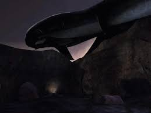
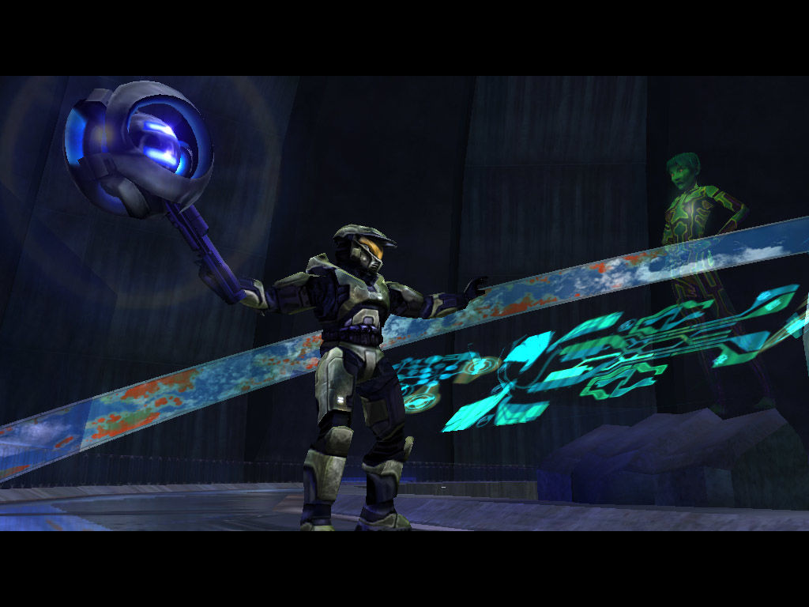

| todos los niveles |
| temas |
The Pillar of Autumn |
|
Escapa intacto mientras las fuerzas de Covenant abordan tu nave |
| Halo |
|
Busca marines sobrevivientes y ayúdalos a luchar contra el Pacto |
| La verdad y la reconciliación |
 |
Aborda la nave Covenant en un intento de rescatar al capitán Keyes |
| El cartógrafo silencioso |
|
Busca la sala de mapas que te llevará a los secretos de Halo |
| Asalto a la Sala de Control |
|
Defiende la Sala de Control contra oleada tras ola de tropas del covenant |
| 343 Chispa culpable |
|
Arrastrarse a través de un pantano para encontrarse con el único enemigo que temen los Covenant |
| La Biblioteca |
|
Ábrete camino a través de una antigua instalación de seguridad en busca del Índice de activacion de halo (se recomienda no jugar en legendario) |
| Dos traiciones |
 |
Reactiva el arma en el corazón de Halo ... y aprender la verdad |
| Keyes |
|
Organiza un asalto de un cyborg a un barco Covenant y trae de vuelta al Capitán |
| Las fauces |
|
Destruye Halo antes de que Halo destruya toda la vida en la galaxia |
regresar